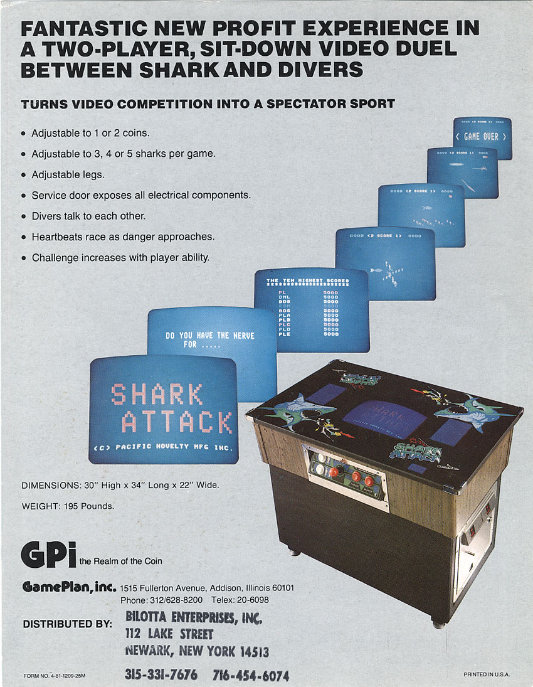
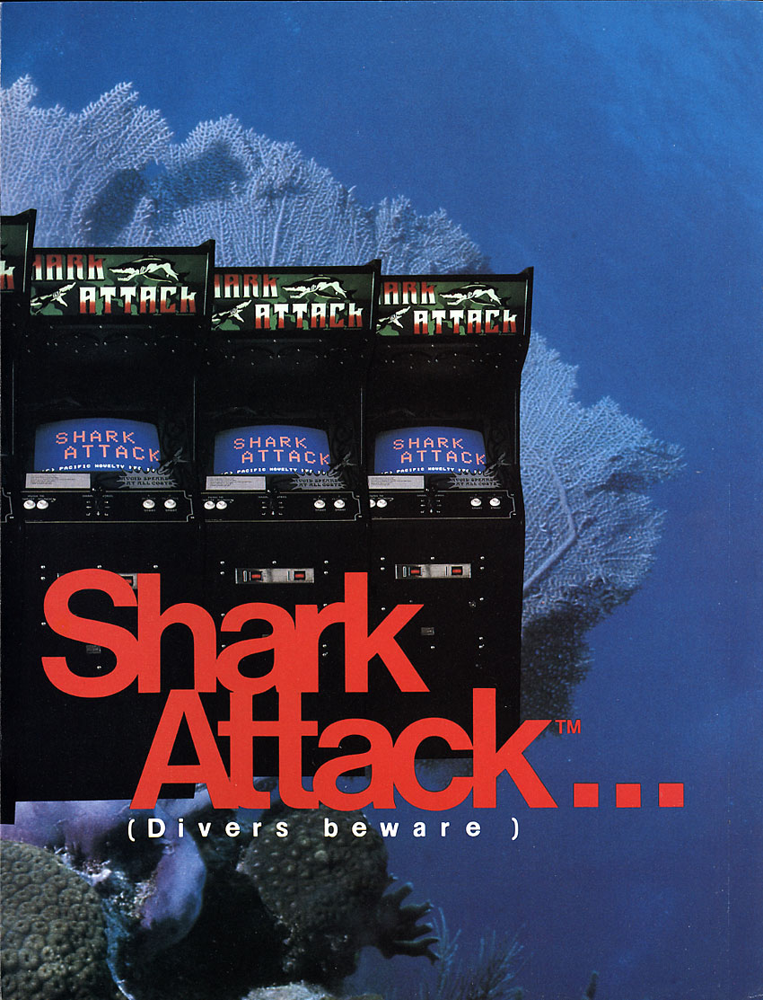
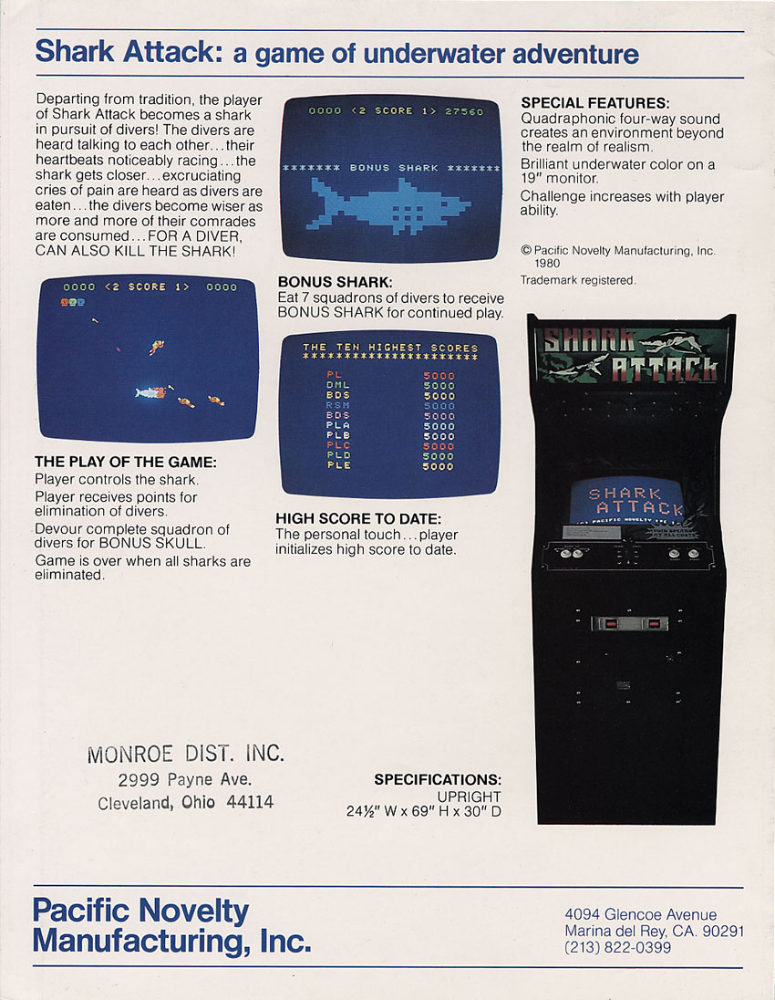

Technical Snapshot
Deep Death / Shark Attack
Shark Attack puts the player in control of a great white shark hunting divers armed with spear guns. The divers can kill the shark or escape, making the player both predator and target. Its conspicuous cabinet presentation, recorded voices and unusual viewpoint distinguished the game among the space shooters and maze games of the early 1980s.
Pacific Novelty enters manufacturing
Pacific Novelty Manufacturing, Incorporated was incorporated in California on October 15, 1980. Its May 1981 trade profile identified Brian Semler as president and placed the company in Marina del Rey. Semler described a progression from liaison work for Segasa and Williams Electronics to a San Francisco distribution and route operation with his brother Larry Siegel, then game development and licensing before manufacturing.
Stolar’s later account emphasizes his own involvement in forming the business in 1980. The contemporary profile and the later recollection describe different parts of its beginnings; neither supplies a complete set of credits for Shark Attack. The wider business and its other products are covered in the Pacific Novelty company history.
From Deep Death to Shark Attack
The game first appeared publicly as Deep Death at the 1980 AMOA convention in Chicago. In Play Meter’s January 15, 1981 show coverage, Tony Licata selected it as one of four standout machines, alongside Battlezone, Berzerk and Star Castle. That favorable reception documents its early public showing, without establishing how well it subsequently sold.
A surviving flyer uses Shark Attack with a 1980 Pacific Novelty copyright. The copyright date accompanies the commercial title, although it does not by itself establish the exact day the flyer was printed or the name changed. By May 1, 1981, Play Meter reported that Pacific Novelty had begun production after development and field testing. Brian Semler identified Deep Death as the AMOA prototype name and explained that Shark Attack described the game more clearly.






Controls and diver encounters
An eight-way joystick and two buttons, Thrust and Munch, control the shark. Movement and attack are separate actions: Munch operates the jaws, while Thrust increases movement speed. The player must repeatedly press and release Munch rather than simply hold it down. Closing on a diver therefore requires both positioning and a timed bite, with enough room left to evade spears.
Divers arrive in armed groups, forcing the player to balance hunting with survival. Their increasing point values make later squads more valuable, and completing the seven-squadron cycle awards another shark. The opposition becomes faster after a completed cycle, so repeating the scoring pattern demands quicker reactions.
Colored skull icons mark completed squads. The skull matches the divers’ color and its eyes blink left and right. These indicators make progress through the squad sequence visible while the player pursues higher values and the extra-shark award.
Recorded voices
Shark Attack combines electronic effects with prerecorded diver chatter and screams delivered from a cassette. Human voices were an active part of the attraction, giving the underwater pursuit an audible presence beyond the screen.
Recorded dialogue could draw attention from across the arcade and supply longer passages of sound than short electronic effects alone. Pacific Novelty used related theatrical sound ideas in Thief and NATO Defense, with police pursuit dialogue and tank chatter respectively.
Later museum and enthusiast accounts describe Shark Attack as an early example of quadraphonic videogame sound, sometimes claiming it as the first. Absolute priority remains unproven. Game Plan’s manual documents the more precise arrangement: four channels divided between cassette voices and programmable sound generators.
Production and licensing
Bernie Stolar later recalled that Shark Attack attracted legal attention because of its resemblance to Jaws, followed by a royalty arrangement that would begin after the first thousand machines. In his account, Pacific Novelty stopped below that threshold. Retellings give 999, 990 or simply just under 1,000 units; neither the agreement nor an exact production total has been independently corroborated.
Stolar’s estimate remains retrospective testimony. Factory records, distributor invoices or a reliable serial-number study could confirm or revise it and separate Pacific Novelty production from licensed versions.
Licensed versions complicate any total. Museum records identify Game Plan as a licensed manufacturer, and a July 1981 Play Meter item describes its sit-down version. The Museum of the Game also records a Game World connection. Pacific Novelty’s own output and total production across manufacturers and cabinet formats need not be the same number.
Reception and surviving machines
Contemporary trade reporting records favorable AMOA attention, while later documentation depends heavily on museum records, collector reports and a small number of dedicated cabinets and boards. VAPS participation records few original examples, but a voluntary collector census cannot establish total surviving cabinets or original sales.
Shark Attack’s identity rests on the combination of its shark-versus-divers premise, controlled bite, bursts of speed and recorded human reactions. The cabinet, controls and sound system are as much a part of that identity as the graphics.
Related hardware and preservation
Collector preservation work has demonstrated Shark Attack, Thief and NATO Defense running on a modified common board family. That experiment documents technical relationships and adaptation; it does not prove that unmodified boards were interchangeable at the factory.
The three games share an approach in which electronics, software, cabinet presentation and sound combine to create different attractions. Similarities between surviving boards can help identify replacement parts and later modifications, but each cabinet’s original configuration still requires its own documentation.
Shark Attack, Thief and NATO Defense all make prominent use of prerecorded audio. The recordings and mechanisms differ, so a working tape system in one game is a useful comparison rather than a complete specification for another.
Attract mode, turns and cabinet formats
Game Plan’s introduction calls Shark Attack a full-color one- or two-player action game and emphasizes the combination of video and audio. After power-up, the cabinet cycles through three attract-mode images. One asks whether the player has the nerve for Shark Attack. Another presents the high-score table, where a player exceeding 5,000 points can enter three initials using the joystick and Munch button. The entry window lasts sixty seconds. A simulated game then shows the shark swimming while a squadron of four divers swims and fires spears. The attract mode demonstrates the premise, danger and personality before a coin is inserted.
The manual also documents coin and start behavior. The cabinet accepts coin input regardless of its current condition, produces a coin sound and increments the counter. The standard operator choices are one play for one coin or one play for two coins. When enough credit exists, the start switches become active and the game resets the scores. These details help distinguish the documented production machine from later memories of how a surviving cabinet happens to be wired.
Turns, sharks and the seven-squadron cycle
The operator can select three, four or five sharks per game. A normal four-shark game begins with a score of zero and four shark symbols below it. Four divers appear, immediately begin firing spears and move in a random pattern. The player uses the joystick to reach an attacking position and repeatedly depresses and releases Munch to operate the jaws. The jaws do not remain active simply because the player holds the button down.
Each devoured diver increases the score. When the last diver in a squad is eaten, the machine awards a skull in the same color as that squad’s divers. The manual describes the skull’s eyes blinking left and right. After seven squadrons have been eaten, the machine displays Bonus Shark and adds another shark below the score. When a shark is struck by a spear, it breaks up in place, then the game reports the score and the number of sharks remaining before the next round begins.
The two-player game uses the same rules with alternating turns. On an upright cabinet both players use the common control set. On the cocktail version, the two sides have separate controls, and the computer alternates control while flipping the picture toward the active player. The cocktail cabinet was therefore not merely a cosmetic variation; its control arrangement and screen orientation were part of the intended product design.
Scoring and the four-channel sound system
The seven squads contain four divers apiece. Values per diver rise through 50, 100, 200, 300, 400, 500 and 750 points. Diver awards add up to 9,200 points. The seven skull bonuses are 200, 300, 400, 500, 800, 1,000 and 2,000 points, adding another 5,200. Together they produce the manual’s 14,400-point cycle total. Its 12,400 entry is the running score before the final skull bonus, including bonuses already earned; it is not a separate total for divers.
That 14,400 figure is the threshold for the Bonus Shark. After the seventh squad, scoring returns to the first squad’s 50-point value, but the manual says the entire game becomes greatly faster. The bonus therefore marks a transition into a more demanding cycle. The machine teaches the values, then asks the player to repeat the pattern under greater speed.
The sound section is unusually valuable. Shark Attack uses a prerecorded cassette together with two programmable sound generators. The cassette requires two speakers, and the programmable generators require two more. The cassette is an automotive-type stereo unit inside the cabinet, while an interface board switches it on and off and cues individual tracks.
The four channels are identified as follows. Channel A is the heartbeat sound from a programmable sound generator. Channel B is the repeating background sound, described as “Dum, Dum, Dum—dum,” also from a programmable generator. Channel C is diver chatter from the cassette player. Channel D is the divers’ screams, also from the cassette. The operator adjusts the balance between chatter and screams with the cassette controls, while the programmable channels have trimmer adjustments on the interface board.
The four-channel arrangement combines an electronic heartbeat and background pattern with separate recorded channels for chatter and screams. Both the programmable channels and cassette balance can be adjusted, so the mix heard in one cabinet may differ from another.
The manual says the balance between chatter and screams was preset at the factory. If an operator wanted to eliminate the screams, the balance could be moved so that only chatter emerged. That small instruction confirms that the scream track could be intrusive in a location and that the audio experience heard by players could vary from one surviving cabinet to another.
Operator settings and ROM diagnostics
The documented operator options are limited but meaningful. One interface-board switch selects one or two coins per play. Another selects three, four or five sharks per game. A diagnostic setting places the machine into self-test. These controls show that the cabinet’s difficulty and service behavior were not entirely fixed by the game program. Operators could choose the starting supply of sharks, affecting how long a new player could remain in the game and how much value a location received from a credit.
The player interface settles a common ambiguity. The joystick is an eight-position control, allowing movement up, down, left, right and diagonally. Munch controls the jaws and requires repeated depression and release. Thrust controls movement speed: pressing it causes the shark to move more rapidly in any of the eight directions. Munch and Thrust are not two names for the same action. One operates the attack and the other changes movement response.
That distinction matters to restoration. A cabinet can have a working joystick and still feel wrong if the Thrust switch is dead, miswired or assigned to the wrong input. It can display the game correctly while losing the physical rhythm of opening and closing the jaws if Munch is treated as a simple held input. The manual gives restorers a contemporary behavioral target, not merely a list of parts.
Shark Attack contains a ROM self-test routine. With the diagnostic switch set, the game displays version information, the creation date, the creator line and checksum values for the installed EPROMs. The manual lists a January 12, 1981 version and separates cocktail and upright values where they differ. It warns that the numbers can change with revisions and that corrections shipped with a game should be retained.
A surviving board set can be compared with the documented version information and checksums. Recording its revision, upright or cocktail configuration and any manual correction sheets helps distinguish an original combination from later repairs and substitutions.
The installation instructions establish the physical environment expected by the manufacturer. The cabinet requires 115-volt, 60-cycle AC, must remain within six feet of a grounded outlet and needs ventilation, temperature control, weight support and working clearance. The manual warns against removing the ground prong, notes that high voltage runs the monitor, and directs operators to power down before disconnecting plugs or replacing parts.
The original cabinet combines a color CRT monitor, cassette mechanism, interface board, programmable sound generators, CPU board and multiple EPROMs. Operation depends on those elements working together.
Emulation preserves the program’s rules and graphics, but the physical experience also includes the eight-way joystick, repeated Munch action, Thrust button, independent voice channels and, on the cocktail, a picture that flips toward the active player.
Open questions
No factory production ledger or reliable serial-number study establishes how many cabinets Pacific Novelty, Game Plan and Game World each made. Stolar’s Jaws-related royalty account remains uncorroborated by a contemporary agreement.
Project-specific programming, graphics and sound credits remain incomplete. The manual describes a creator line in the diagnostic display, but that instruction alone does not identify every contributor. Documented photographs of the display, board revisions and original cassette installations could clarify the surviving versions.
More complete records of licensed production, original tape hardware and cabinet variations would help distinguish factory differences from later repairs. A cabinet photograph is evidence for that example, not proof that every machine left the factory in the same form.
Cabinet restoration and sound-system preservation
The manual suggests a restoration order that begins with the cabinet as a complete system. A technician first checks the shipping and cabinet condition, then confirms connectors, seated integrated circuits and the monitor display. Only after the attract mode is correct does the normal checkout proceed to coin input and play. That sequence is sensible for a surviving Shark Attack because a fault in one subsystem can disguise a fault in another. A missing cassette track, for example, should not be mistaken for a game-program failure, and a dead Thrust switch should not be treated as a board problem until the control wiring has been checked.
A good restoration record should therefore identify the cabinet format, board revisions, ROM checksums, monitor type, control layout, cassette unit, interface-board adjustments and speaker arrangement. It should note whether the machine is upright or cocktail, whether the cocktail image flips correctly, whether the four audio channels can be balanced, and whether the diagnostic routine reports the expected version. Photographs of the inside are just as valuable as photographs of the artwork. They preserve the physical evidence that later replacements or conversions may otherwise erase.
The manual’s language also reminds us that operators were expected to adjust the machine for a particular location. Volume balance, coin pricing and shark count were practical choices. A cabinet heard in one arcade may not have sounded exactly like another, even when both were factory-correct. That variation is part of the game’s history rather than an inconvenience to be edited away. The goal is not to create one imaginary perfect Shark Attack, but to document which version a survivor represents and how its presentation changed over time.
There is a preservation lesson in the game’s unusual combination of recorded and generated sound. Replacement cassette hardware can restore voices while leaving the programmable heartbeat and background sounds untouched. Conversely, a board repair can restore those electronic channels while the original tape mechanism remains silent. A complete restoration has to treat both sides of the system as historically meaningful. The diver chatter, screams, heartbeat and background pulse are separate pieces of the same designed event.
Sources and further reading
- California corporate filing index — Pacific Novelty Manufacturing, Incorporated. California Secretary of State-derived record: Articles of Incorporation filed October 15, 1980; entity number 01027249; current status inactive; Brian D. Semler identified as president. Open the California-record summary
- Play Meter, May 1, 1981 — “Pacific Novelty hits the water.” Contemporary company profile identifying Brian Semler as president, Marina del Rey, the 1980 AMOA showing, the Deep Death prototype name, Shark Attack production, Semler’s business background and the seven-game planning statement. Read the contemporary profile
- Play Meter, January 15, 1981 — 1980 AMOA review. Tony Licata’s show coverage placed Deep Death among four standout games. Valuable for contemporary reaction rather than later commercial mythmaking. Open issue in the International Arcade Museum eLibrary
- Modern Pacific Novelty hardware preservation work. Collector experimentation demonstrating Thief, Shark Attack and NATO Defense on a modified common board family. Useful as preservation evidence, not as proof of original factory-supported interchangeability. Specific collector thread
- Bernie Stolar interview material. Important first-person oral history for the company’s formation, Shark Attack, Thief, NATO Defense, Computer Portraits, the Jaws/royalty story and the claimed Atari transaction. Retrospective testimony; the production and royalty claims remain uncorroborated. Arcade Attack Retro Gaming Network interview
- Game Plan, Inc., Shark Attack manual. Contemporary operating and service instructions: sections 2.1–2.7 cover attract mode, turns, scoring and sound; sections 3–5 cover options, controls and ROM diagnostics. Read the scanned manual.
- Shark Attack flyer record. Two Game Plan-branded flyer pages, with Pacific Novelty copyright credit. View the flyer record.
- Museum of the Game, Shark Attack. Game identity, licensing and cabinet reference; collector census information does not establish original sales. View the museum record.
Have something we’re missing?
Original paperwork, cabinet photographs, serial numbers, cassette recordings and firsthand accounts can help clarify Shark Attack’s production and surviving versions. Send a correction or contribute evidence.